The word “sustainability” has been tossed around so frequently in recent times that it has lost its significance. Companies often use it as a marketing strategy, presenting themselves as environment-friendly in the absence of real action.
However, sustainable construction is much more than using eco-friendly materials and reducing waste. It entails preservation of time-honoured practices. These traditional practices hold cultural value and thus should be cherished. But most importantly we should maintain them in order to empower and enable our traditional craftsmen to continue their work. By acknowledging their effort and expertise, we can uphold our cultural legacy while inspiring its continuation for the future generation.
At Malhar Eco-Village, an array of textures, materials, and hues imbue every crevice evoking nostalgia.
In this series we attempt to understand and learn more about age-old traditional concepts through sightings across Malhar Eco-Village, where creative reinvention adds vibrancy and character to the overall aesthetics.
Oxide finish
For anyone who grew up before the 20th century, the deep red hues or shiny black floors were a common sight at homes across south India. The rich tint was created by mixing natural iron oxides with other materials, such as sand and clay, to create a durable and long-lasting flooring material that could withstand heavy foot traffic and daily wear and tear.
Oxide finish was, thus, popular at homes and public buildings such as temples and palaces. In fact, many ancient temples in south India have red-oxide flooring that has been preserved over centuries.
Renowned Kannada poet Kuvempu’s home at Kuppalli in Thirthahalli, Shivamogga in Karnataka.
The material was often laid in large, sweeping patterns that complemented the architecture of the space and created a sense of warmth and comfort.
Padmanabhapuram Palace, Tamil Nadu.
To attain the ideal consistency, the mixture of red-oxide powder, sand, and cement must be meticulously measured and prepared. Before it is applied, the floor’s surface must be cleaned, levelled, and primed to ensure proper adhesion of the red-oxide mixture. To achieve a seamless finish, it’s important to spread the mixture even and trowel it. Finally, the flooring needs to be left to dry and then polished to attain the desired sheen. Applying red-oxide flooring demands a specific level of expertise and knowledge, a skilled process.
With the advent of new flooring options such as tiles and marble in the 20th century, the use of oxide finish declined. The number of skilled workers who had mastered the art over the years and passed it on to the next generation began to dwindle.
However, oxide finish has its own challenges. It’s prone to develop cracks or chips over time, and nearly impossible to redo a small area with the same smooth finish. Also, a slightest error in mixing or applying will lead to an inferior finish.
Hence, a skilled worker who knows the right mix and adept at applying plays a vital role.
Revitalisation of traditional techniques
The seating in the courtyards of GoodEarth Footprints is an innovative and creative way to blend traditional elements with a modern twist. Traditionally, geometric patterns were created on the floor using thread and sometimes inlaid with marble as a decorative element.
Here, the concept has been taken up a notch with the use of broken tiles in mosaic patterns that adds a playful and peppy element to the space, accentuating the pop of colour from the oxide.
Adding this personalised decorative element to an otherwise plain finish enhances the aesthetics and makes the space appealing.
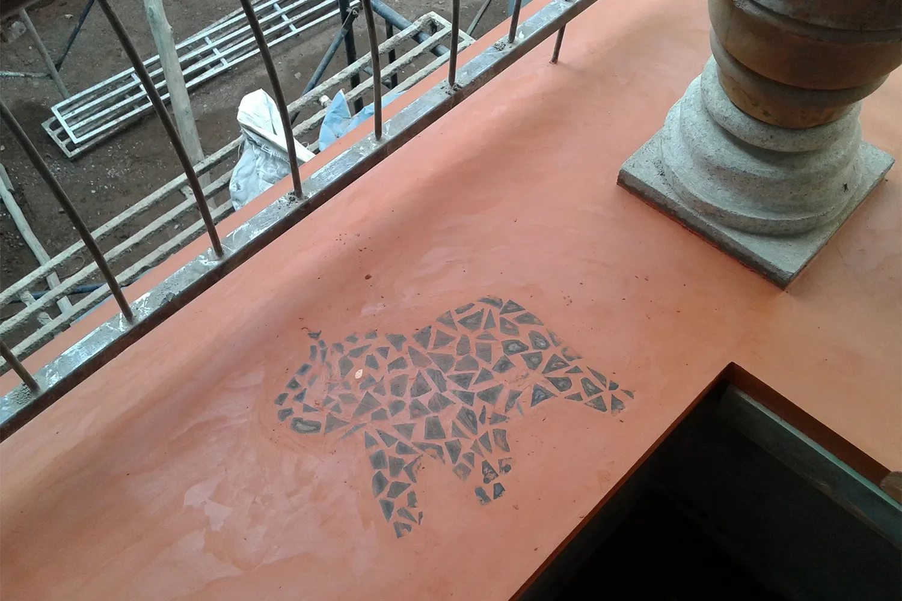
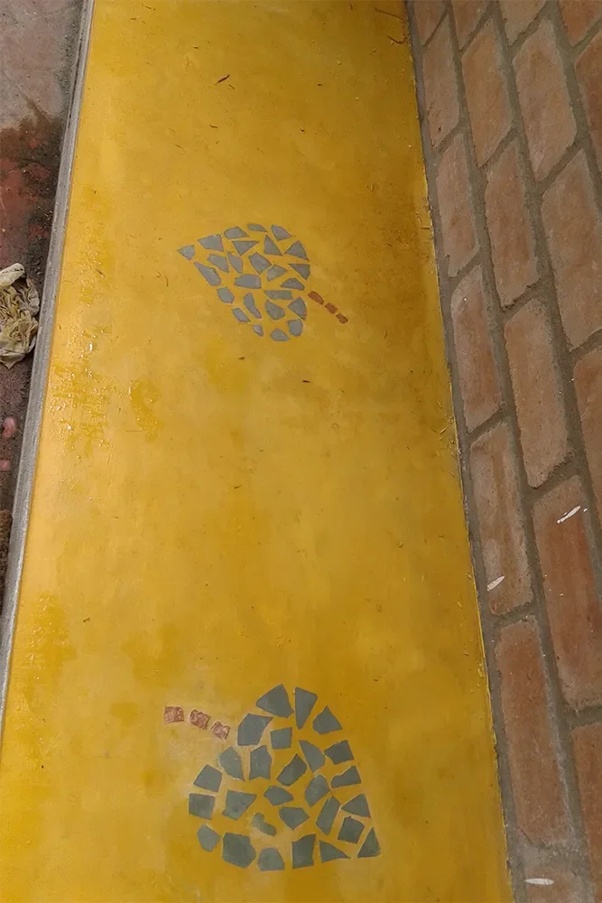
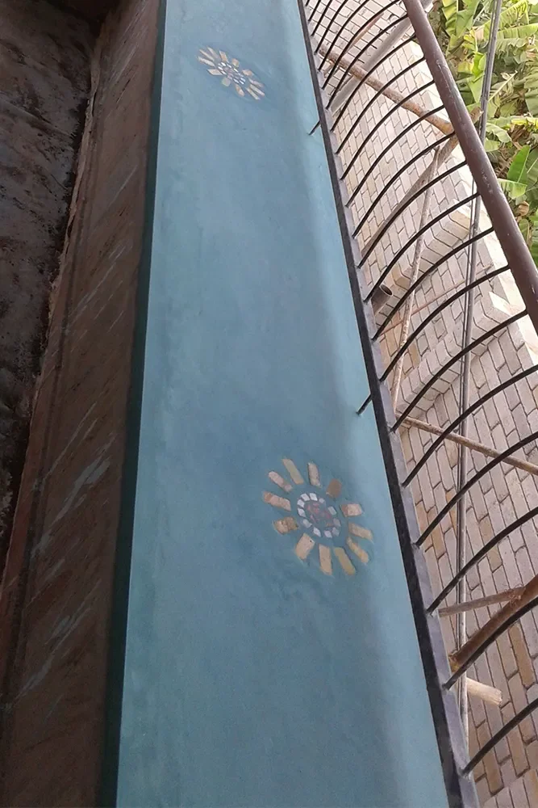
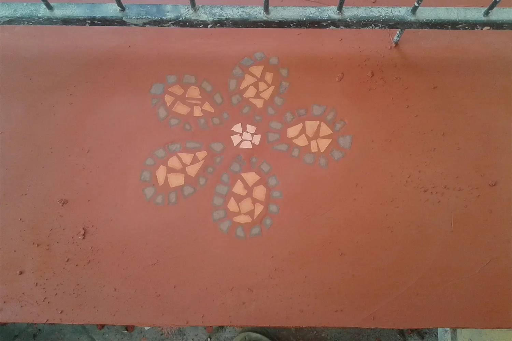
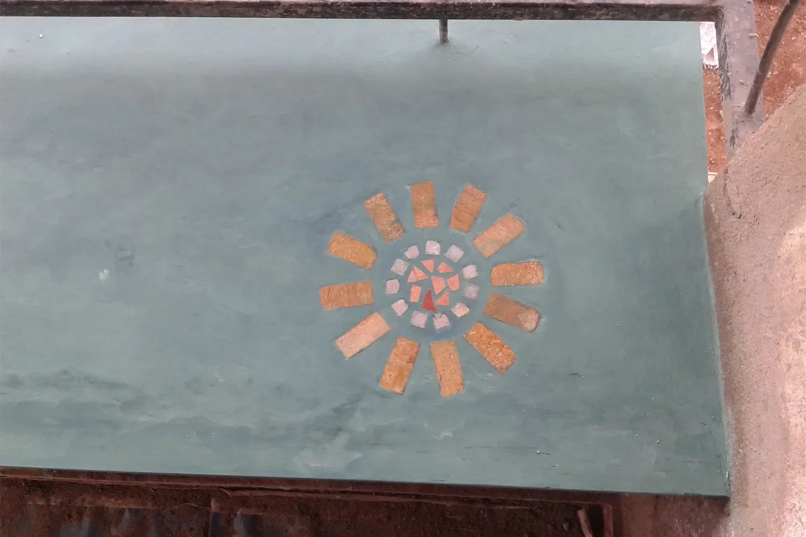
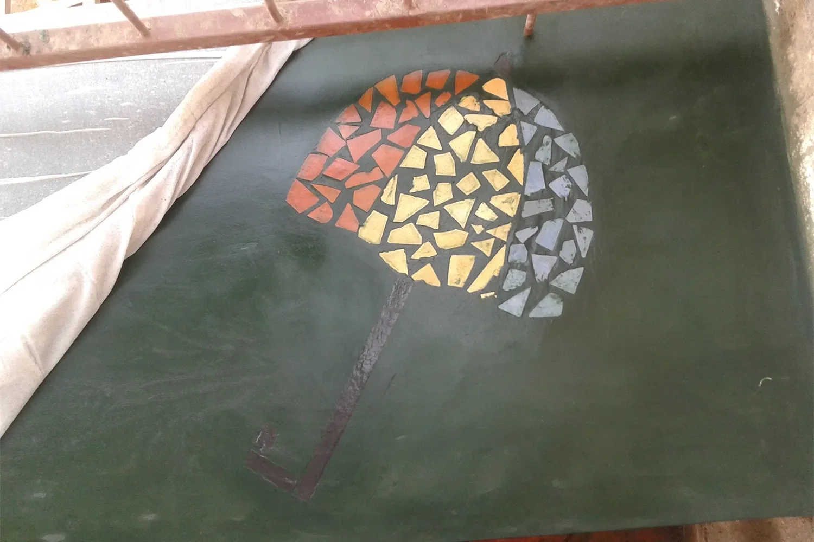
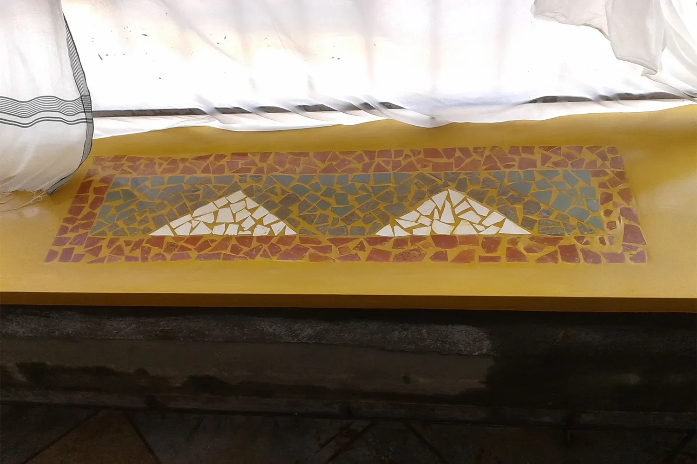
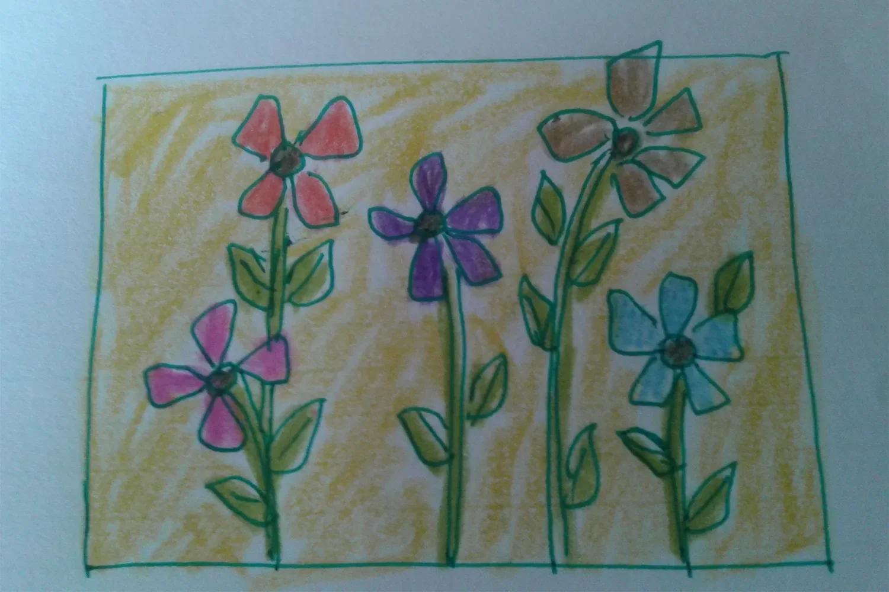
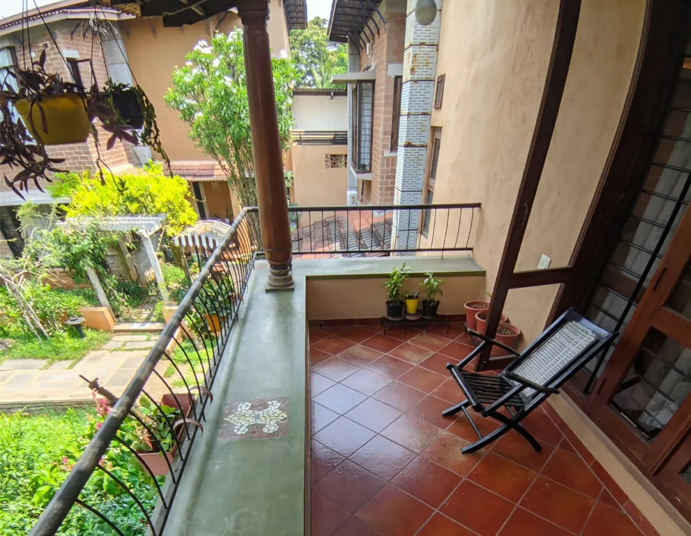
Confluence Sports Club
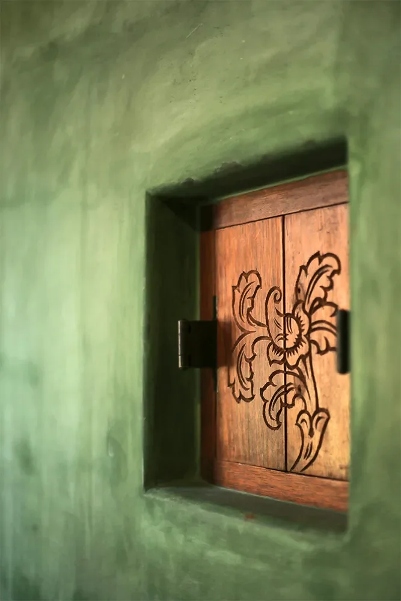
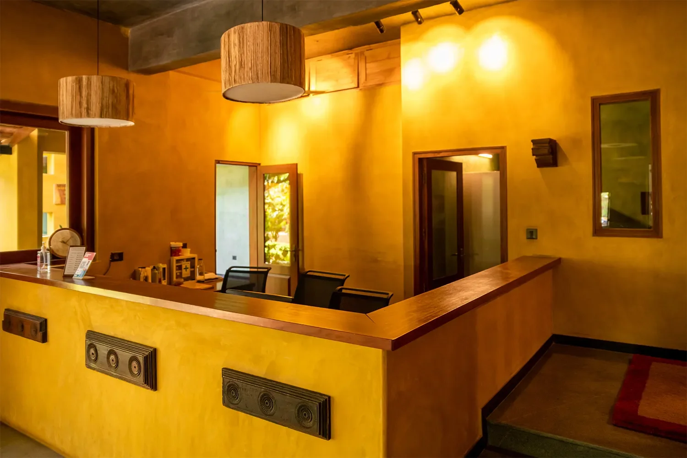
The radiant green walls at Confluence Sports Club harmonise with the lush greenery outside, blurring the boundaries between indoors and outdoors. The clever use of repurposed wooden doors and windows as wall art adds depth and texture to the rustic decor, creating an inviting atmosphere.
Bayleaf Café
The spirited yellow that adorns the walls of Bayleaf Café together with juxtaposition of wooden furniture and grey from the concrete in the ceiling and the floors transforms the place into a lively hub.
Gazebo at Mosaic
Blue glass bottles suspended from the ceiling augments the electric blue gazebo seating at Mosaic. The combination of clear bottles and stacked stones highlights the zestful colours and draws one to the heart of the space creating a dynamic effect.
That’s not all. It’s not only the glass bottles that’s repurposed but the stacked stones further exemplify commitment to eco-conscious design.
Traditional practices such as oxide finish not only have their practical benefits but also hold cultural value. Creative reinvention of traditional practices such as oxide finish at Malhar Eco-Village adds a new dimension to beauty and brings alive the character while providing a glimpse into the past.

Leave A Comment